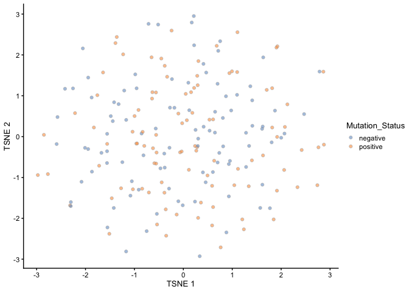
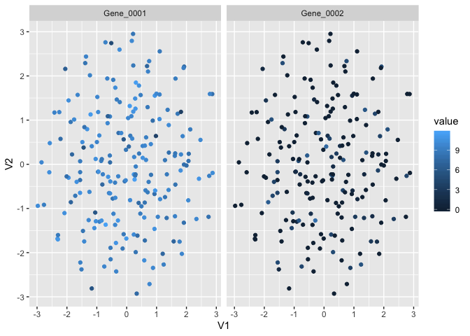

Introduction
The S4 object in Bioconductor is great for many things. But every now and then, I have problems manipulating the column or the row data of a S4 object. This package provides several dplyr-style functions to manipulate the column data of a S4 object.
This is an experimental package that only receives occasional updates.
Demo
Suppose we have a SingleCellExperiment object, and we want to add in the cell-type information
library(SingleCellExperiment)
library(plyexperiment)
library(dplyr)
set.seed(123)
y <- matrix(rnorm(2000), ncol=20)
sce <- SingleCellExperiment(list(counts=y))
cell_type = sample(LETTERS, ncol(y), replace=TRUE)
## Traditional indexing
sce$cell_type = cell_type
## plyexperiment syntax
sce = sce %>% mutate_col(cell_type)The benefit of plyexperiment is similar to the benefits of tidyverse syntax and benefits from chaining using the pipe operators. For example, the filter function is useful in spliting the data based on information in the colData.
## class: SingleCellExperiment
## dim: 100 1
## metadata(0):
## assays(1): counts
## rownames: NULL
## rowData names(0):
## colnames: NULL
## colData names(1): cell_type
## reducedDimNames(0):
## spikeNames(0):
## altExpNames(0):
Exporting reducedDim data
The scater package contains a lot of useful functions in manipulating SingleCellExperiment objects. In particular, the reducedDim slot typically stores dimensional reduced data matrices.
However, to customise the plots based on your own personal taste could be a bit tougher. For example, if you want to overlay the expression of a cell-type marker onto the tSNE plot.
example_sce <- mockSCE()
example_sce <- logNormCounts(example_sce)
example_sce <- runTSNE(example_sce, scale_features=NULL)
plotTSNE(example_sce, colour_by = "Mutation_Status")
(tsne_tbl = example_sce %>%
export_reducedDim(type = "TSNE",
feature = c("Gene_0001", "Gene_0002")))## Warning: Column `cell_name` joining character vector and factor, coercing into
## character vector
## # A tibble: 400 x 8
## cell_name V1 V2 Mutation_Status Cell_Cycle Treatment gene_name value
## <chr> <dbl> <dbl> <chr> <chr> <chr> <fct> <dbl>
## 1 Cell_001 1.11 2.56 positive G2M treat2 Gene_0001 8.74
## 2 Cell_001 1.11 2.56 positive G2M treat2 Gene_0002 0
## 3 Cell_002 1.04 -1.19 positive G1 treat1 Gene_0001 9.47
## 4 Cell_002 1.04 -1.19 positive G1 treat1 Gene_0002 3.02
## 5 Cell_003 -0.351 -2.43 positive G1 treat2 Gene_0001 9.54
## 6 Cell_003 -0.351 -2.43 positive G1 treat2 Gene_0002 0
## 7 Cell_004 -0.387 -1.37 positive G1 treat2 Gene_0001 9.75
## 8 Cell_004 -0.387 -1.37 positive G1 treat2 Gene_0002 0
## 9 Cell_005 0.335 -2.93 negative G0 treat2 Gene_0001 7.50
## 10 Cell_005 0.335 -2.93 negative G0 treat2 Gene_0002 0
## # … with 390 more rows
Acknowledgement
This package was forked over from sa-lee/plyexperiment and the main functions were originally written by Davis McCarthy and Aaron Lun.